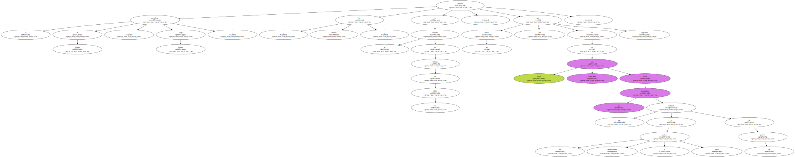
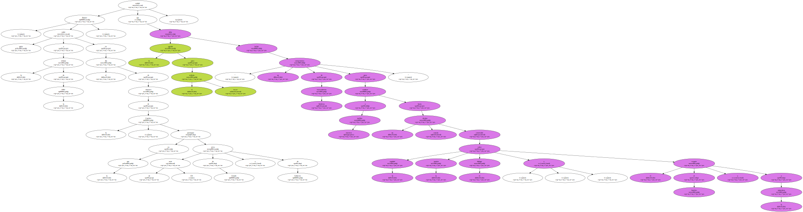
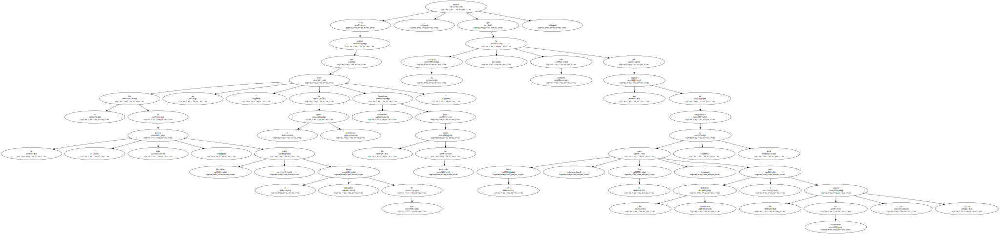
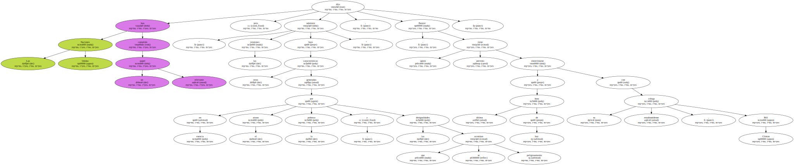
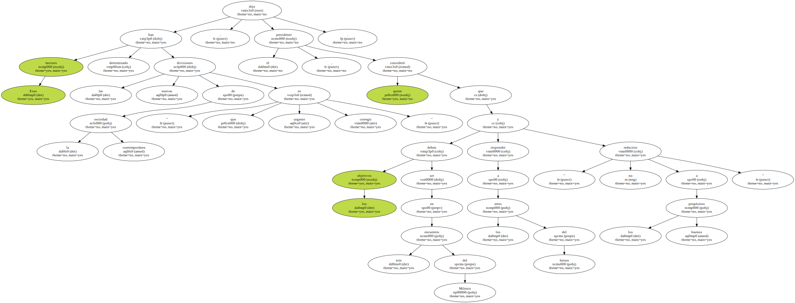
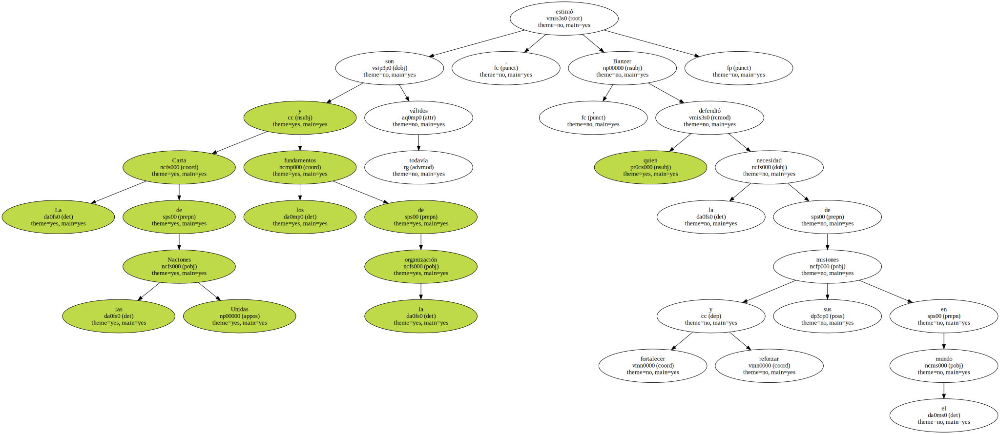
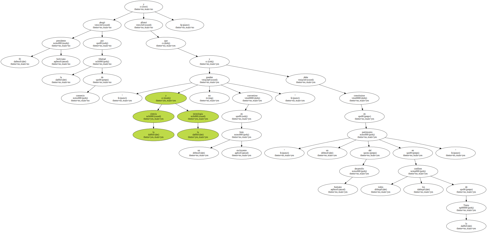
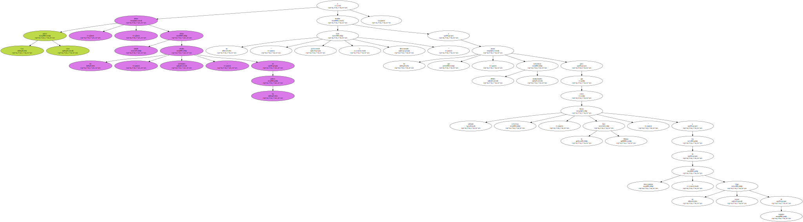

El presidente de Bolivia , Hugo Banzer , afirmó hoy , viernes , en la Cumbre del Milenio de la ONU , que no habrá paz ni seguridad si éstas son construidas sobre las disparidades que separan a los países desarrollados y ricos de los pobres.
Banzer , quien subió a la tribuna de la ONU en el día de clausura de la Cumbre , en la que participan más de 150 jefes de Estado y de Gobierno , señaló que la agenda para el tercer milenio debe incluir " un compromiso de trascendencia histórica para conducir a nuestros pueblos hacia un destino común construido sobre la equidad , la justicia , el diálogo , y el respeto al hombre y a la naturaleza ".
Tras señalar que el fin de la " guerra fría " entre Occidente y el bloque comunista del este no " trajo en el plano económico beneficios sustanciales para los países en desarrollo " , estimó que el conflicto " ha sido sustituido por una especie de antagonismo entre el Norte y el Sur " , es decir entre las potencias económicas y los países en crecimiento o pobres.
Las Naciones Unidas han cumplido un papel relevante pero " las tensiones subsisten bajo otras características generadas en esencia por el atraso , la pobreza y las desigualdades que se acentúan peligrosamente " , dijo Banzer , quien tiene previsto entrevistarse a última hora de hoy con su colega estadounidense , Bill Clinton.
Esos factores han determinado las nuevas divisiones de la sociedad contemporánea " que es urgente corregir " , dijo el presidente , quien consideró que en este encuentro del Milenio los objetivos deben ser responder a los retos del futuro y " no reducirse a los buenos propósitos ".
La Carta de las Naciones Unidas y los fundamentos de la organización son todavía válidos , estimó Banzer , quien defendió la necesidad de fortalecer y reforzar sus misiones en el mundo.
El presidente boliviano abogó por la libertad de comercio y afirmó que " la ciencia y la tecnología no pueden convertirse en un bien excluyente " y debe constituirse en " un patrimonio del desarrollo humano en todos los confines de la Tierra ".
para Banzer , " es fundamental que en una economía abierta no se cierren los mercados con medidas discriminatorias , y criterios proteccionistas ".

Los países ricos , añadió , deben aliviar las " deudas asfixiantes " de los pobres y brindar un " trato preferencial y diferenciado " a los que tienen " débiles estructuras institucionales para que lleven adelante reformas , como lo hizo Bolivia " a fin de atraer inversionistas y un mayor flujo de capitales.
